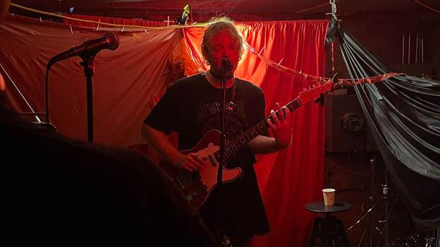

Carter Gray Shelter Conjures Catastrophe at Caffeine Underground (SHOW REVIEW)
Primed by short and sweet opening sets from bands Dinner Walk and Madonna 5, the audience stirred with anticipation for Carter’s entrance. And entrance they did: Carter donned a black mini skirt, KGLW band tee, fishnets, and a black choker to match. Famous for their pre-show outfit changes, Carter’s personal style corroborates their heartbreaker vagabond persona.
Imagine your grandfather’s long-neglected basement, with a 4x6 platform near the back wall. Your forgotten childhood drum set from Christmas ‘06 still stands, now covered in silver tinsel. Caffeine Underground’s basement stage necessitates the intimacy of the family home, your friend’s garage, your mother’s foyer filled with hoarded box sets of Scrubs DVDs, a torn inflatable pool, and broken down boxes propped up against a dusty stationery bike. Amid the disarray of Caffeine Underground's basement, a moody red illuminated our performer’s elven face. Their dark silhouette was backdropped by two clothespinned 300-threadcount red top sheets. From the clothesline to the ceiling shimmered a spider web, centered above Carter’s head: an apt halo.
Settled onto the stage, Carter wasted no time with small talk: they have more effective means of forging their congregation. Launching into fluttering, ambient chords that garbled into the opening notes of their top 2 single, “Only Me/Only You,” Carter gave the crowd a brief moment to brace themselves. As we all lurched inwards, they offered footholds in the storied promises of a one-sided relationship that teeter-totters between whom it serves. What looked like swinging as opposed to strumming, Carter wielded their trusty classic red guitar like a hula hoop. To say they have a mastery of their instrument would be an understatement. Together, they are weightless— they glide and cradle and play and swim as one.
“Half a Mind” followed “Only Me/Only You,” another quintessential demonstration of Carter’s ability to build up walls of sound, only to drop back into gentle finger picking, or a tingling burst of silence. Carter has you roaring down the rapids until you’re a drop in the pond.
While they’ve got decades of guitar experience under their belt, their vocal prowess is nothing to scoff at. In a playful and timely homage to Black Sabbath’s “War Pigs,” Carter’s powerhouse vocals dominated. The crowd lit up with recognition as they erupted into the song’s famous opening lines. Though a few lyrics were omitted, the decrepit-chic ambience of the basement stage matched their dilettante rendition: with empty coolers strewn amongst icing-laden cardboard boxes, the venue insists its performers embody the DIY-playful nature of the space.
While they wrangled their trusty steed to a new register, Carter regaled the crowd with tales of their weekend. Not known for mid-show banter, the audience was delighted to hear Carter was fresh off a shrooms bender for their favorite band King Gizzard & the Lizard Wizard’s two-night run at Forest Hills Stadium. After the requisite thank-yous to the audience and fellow performers, Carter reestablished momentum with the lulling and hypnotic “Where.” Carter served sinful licks on the last chorus, with a notable mute that elicited an exhale from the crowd— permission to come up for air. Our heads still swimming, they floated us up to the ether with a celestial outro pumped out from pedals.
Their penultimate tune and claim to fame, “Whirlwind,” is easily the best exhibition of their songwriting prowess. Finger-picking a tender melody as they sing in hushed tones about a green-eyed peacekeeping siren they failed to spare from the reach of the whirlwind, Carter wades the audience in before the uproarious undertow of the chorus. Carter sonorously pleads: ”Bleed when I bleed/ See what I see/ Need what I need/ Be where I’ll be,” embodying the truly cloying and puerile ethos of wanting, told from the isolating and terrifying position it is: “Maybe it’s not real at all.” While the content of some of their other songs can fall under Things I’ve Heard Before, “Whirlwind” evades this category by having its hand on the wire of what it is to want.
Finally out of the whirlwind’s path of destruction– the audience battered and bruised all the same– Carter took us to the beach with the finale, “The Flood.” Grappling once again with themes of fate, disaster, and resurrection, they cemented their catastrophe motif with a frank and hopeful undercurrent: “There is no mountain we can’t climb/ The only mountain is you and I.” Indeed, at the end of their tumultuous set, feeling washed anew in the throes of their tide, it was a relief to see our brooding performer finally crack a smile in this ultimate anthem.